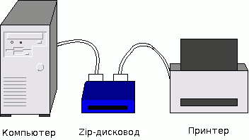
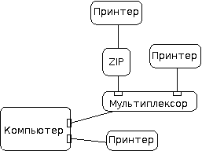

Перевод статьи: The Linux 2.4 Parallel Port Subsystem
Автор: Тим Во (Tim Waugh)
Поддержка параллельного порта в Linux впервые появилась вместе с драйвером строчного принтера - lp. Драйвер принтера - это специальное символьное устройство, которое (в Linux 2.0) поддерживает запись через write, а также просмотр настроек и статистики через ioctl.
Драйвер принтера может использоваться на любом компьютере, который оснащён параллельным портом, совместимым с IBM PC. Поскольку некоторые архитектуры оснащаются параллельными портами, которые не совместимы с портами PC, для поддержки параллельных портов Amiga и Atari были написаны другие варианты драйвера принтера.
Когда был выпущен привод Iomega Zip и для него был написан драйвер, появилась очевидная проблема. Привод Zip - это устройство для параллельного порта, которое оснащено своим собственным параллельным портом. Он был спроектирован так, чтобы находиться между компьютером и принтером: принтер подключался к приводу Zip, а привод Zip подключался к компьютеру.
Проблема в том, что хотя принтер и привод Zip поддерживаются, в любой момент времени определённый порт может использоваться только одним из них. Одновременно присутствовать в ядре может только один из двух драйверов. Так происходит потому, что оба драйвера пытаются управлять одним и тем же оборудованием - параллельным портом. Когда драйвер принтера инициализируется, он должен вызвать функцию check_region, чтобы убедиться, что область ввода-вывода, соответствующая параллельному порту, свободна. Затем драйвер должен вызвать функцию request_region, чтобы получить доступ к этой области. Привод Zip использует тот же механизм. Какой бы из драйверов ни был инициализирован первым, он получит к параллельному порту исключительный доступ.
Единственный способ обойти эту проблему - убедиться что оба драйвера доступны в виде загружаемых модулей ядра. Чтобы использовать принтер, нужно загрузить модуль с драйвером принтера. А затем, чтобы воспользоваться приводом Zip, нужно выгрузить модуль с драйвером принтера и загрузить модуль с драйвером Zip.
В итоге несколько затруднительно было бы напечатать документ, который хранится на приводе Zip, если и привод Zip и принтер используют один и тот же параллельный порт. Тут нужно решение получше.
Приводы Zip - это не единственные устройства, из-за которых в Linux возникают подобные проблемы. Существуют и другие устройства со сквозными портам. Например, приводы CD-ROM, подключаемые к параллельному порту. Также существуют принтеры, которые докладывают о собственном состоянии по линиям данных, а не при помощи выделенных для этих целей линий. У таких принтеров могут быть команды, которые просят принтер вернуть отчёт о полном количестве напечатанных им страниц, или об объёме свободной памяти, или сообщить, закончился ли тонер и т.п. Драйвер принтера изначально не предоставлял никаких возможностей для чтения этой информации (однако Карстен Гросс (Carsten Gross) добавил в ядро 2.2 поддержку режима чтения полубайтов).
IEEE выпустил стандарт под названием IEEE 1284, в котором описана существующая практика взаимодействия с параллельным портом в различных режимах. Это такие режимы как: режим совместимости, полубайтовый режим, байтовый режим, ECP и EPP. Новые устройства часто используют более продвинутые режимы передачи (ECP и EPP). В Linux 2.0 драйвер принтера поддерживал только режим совместимости (то есть обычный протокол принтера) и полубайтовый режим.
Код parport в Linux 2.2 был спроектирован так, чтобы решить поставленные задачи: учесть архитектурные различия между параллельными портами, сделать возможным совместный доступ к порту для устройств со сквозными портами и реализовать полную поддержку режимов передачи IEEE 1284.
В подсистеме parport имеется два слоя, только один из которых напрямую взаимодействует с оборудованием. Другой слой реализует совместный доступ и режимы передачи IEEE 1284. Таким образом, поддержка параллельных портов архитектурно реализуется в виде модуля, который регистрируется в обобщённом слое совместного доступа.
Модель совместного доступа, предоставляемая подсистемой parport, является разновидностью исключительного доступа. Драйвер устройства, например - принтера, сначала должен запросить слой parport разрешить доступ к порту, и только после получения доступа он сможет использовать порт. Когда драйвер завершит «транзакцию», он может сообщить слою parport, что желает освободить порт для использования драйвером другого устройства.
Все устройства со сквозным портом управляют совместным доступом других устройств к параллельному порту примерно одинаково. Устройство оснащено защёлкой для каждого из выводов сквозного порта. В обычном состоянии - в сквозном режиме, устройство копирует сигнальные линии между портом компьютера и сквозным портом. Когда устройство видит специальный сигнал со стороны компьютера, оно защёлкивает сквозной порт, так чтобы последующий поток информации от компьютера не попадал в устройство, подключенное к сквозному порту. Устройство подключенное к сквозному порту (и вся цепочка устройств за ним) фактически отрезаются от компьютера. Когда устройство со сквозным портом завершит транзакцию с компьютером, оно снова включает сквозной порт.
Эта техника опирается на соответствующие «специальные сигналы», невидимые для устройств, которые не наблюдают за ними. Чаще всего это смена сигналов данных без изменения управляющих сигналов. В IEEE 1284.3 описан стандартный протокол для формирования цепочек устройств на параллельных портах.
Поддержка стандартных режимов передачи предоставляет операции, которые могут быть произведены с портом. Это такие операции как: установка линий данных, установка управляющих линий и чтение линий состояния. Эти операции представлены в драйвере устройства в виде указателей на функции. Подробнее об этом будет рассказано далее.
«Стандартные» режимы передачи, используемые на параллельном порту, «определены» в документе IEEE 1284. На самом деле стандарт просто описывает сложившуюся практику и документирует протоколы (и варианты протоколов), которые были общепринятыми в течение некоторого времени.
Оригинальные определения назначения линий были сформированы Centronics Data Computer Corporation, но описан был только интерфейс со стороны принтера.
В начале 1980-х наиболее широко распространилась реализация интерфейса со стороны компьютера от IBM. Вновь появлявшиеся принтеры заявляли о совместимости с Centronics, но их совместимость с Centronics взаимно отличалась несколькими способами.
В результате, когда в 1994 году был опубликован IEEE 1284, всё что фактически можно было сделать - это задокументировать различные протоколы, которые использовались принтерами (около шести разных вариантов).
В дополнение к протоколу, который используется для общения с Centronics-совместимыми принтерами, IEEE 1284 определяет другие протоколы, которые используются для однонаправленной передачи данных от периферийного устройства к компьютеру (полубайтовый и байтовый) и для быстрой двунаправленной передачи данных (ECP и EPP).
В подсистеме parport находится механизм совместного доступа (см. drivers/parport/share.c). Модуль parport отвечает за отслеживание: портов, имеющихся в системе, драйверов устройств, заинтересованных в информации о новых портах, доступа устройств к портам (какие порты доступны для использования, а какие порты в настоящее время используются определёнными драйверами).
Обобщённый код совместного доступа parport не взаимодействует с оборудованием параллельного порта напрямую. Вместо него это делают «низкоуровневые» драйверы parport. Функция низкоуровневого драйвера parport: обнаружить параллельные порты, зарегистрировать их в коде совместного доступа и предоставить список доступных функций для каждого из портов.
Самые базовые функции, которые должны быть предоставлены - это функции чтения линий состояния, задания управляющих линий и задания линий данных. Также могут предоставляться функции для настройки направления линий данных. Обычно линии данных находятся в «прямом» направлении (так что ими управляет компьютер), но некоторые порты позволяют переключить линии данных в «обратный» режим (чтобы ими управляло периферийное устройство). И наконец, могут предоставляться функции для чтения линий данных, находящихся в обратном режиме.
Функции передачи данных располагаются поверх механизма совместного доступа, но тоже являются частью модуля parport. Эти функции предоставляются для драйверов устройств, чтобы они пользовались ими как библиотечными подпрограммами. Поскольку эти функции передачи предоставляются обобщённой подсистемой parport, они должны использовать «наименьший общий знаменатель» из функций доступа: они могут задавать управляющие линии, проверять линии состояния и использовать линии данных. У некоторых параллельных портов линии данных могут быть только заданы и невозможно прочитать их текущее состояние, а у других портов доступ к регистрам данных приводит к изменению состояния управляющих линий. В таких случаях функции передачи IEEE 1284 делают всё возможное для правильной работы. В некоторых случаях оказывается физически невозможно использовать отдельные из режимов передачи IEEE 1284.
Низкоуровневые драйверы parport также предоставляют функции для режимов передачи IEEE 1284, с именами из списка функции доступа. Для этого низкоуровневый драйвер может просто назвать обобщённые функции для режимов передачи IEEE 1284. Некоторые параллельные порты поддерживают режимы передачи IEEE 1284 аппаратно. Для таких портов низкоуровневый драйвер может предоставлять функции, которые используют эту возможность.
Когда инициализируется драйвер параллельного порта (такой как lp), он сообщает слою совместного доступа о себе при помощи parport_register_driver. Информация помещается в структуру parport_driver, которая размещается в связанном списке. Информация в структуре parport_driver представляет собой совокупность указателей на функции, которые может вызывать драйвер устройства на параллельном порту.
Во время инициализации, низкоуровневый драйвер порта при помощи функции parport_register_port сообщает слою совместного доступа обо всех портах, которые он нашёл, а слой совместного доступа создаёт структуру parport для каждого из них. Каждая структура parport содержит (среди прочего) указатель на структуру parport_operations, которая содержит список указателей на функции для различных операций, которые могут быть произведены над портом. Если вам привычнее мыслить в объектно-ориентированной парадигме, вы можете думать о структуре parport как об объекте параллельного порта. Структуры parport связаны друг с другом через связанный список, головой которого является portlist (в drivers/parport/share.c).
Как только порт зарегистрируется, низкоуровневый драйвер анонсирует его. Функция parport_announce_port проходится по списку драйверов устройств на параллельных портах (структура parport_drivers), вызывая функцию attach каждого из них (которая может блокироваться).
Аналогично, низкоуровневый драйвер порта может отменить последствия регистрации порта при помощи функции parport_unregister_port, а драйверы устройств будут уведомлены вызовом функции detach (которые не могут блокироваться).
Драйверы устройств также могут отменить последствия собственной регистрации при помощи функции parport_unregister_driver.
Возможность создания цепочек устройств очень полезна, но если каждое устройство реализует цепочку разным способом, то это может привести к массе сложностей для авторов каждого из драйверов устройств. К счастью, стандарт IEEE 1284.3 покрывает вопросы формирования цепочек устройств и работы мультиплексоров портов.
Во время написания, когда IEEE 1284.3 ещё не был опубликован, в черновике уже был описан протокол для формирования цепочек устройств и мультиплексирования, а также был предложен программный интерфейс для их использования. Этот интерфейс (или большая его часть) был реализован в коде parport в Linux.
Во время инициализации «шины» параллельного порта, устройствам в цепочке назначаются номера, начинающиеся с нуля. В цепочке может быть до четырёх устройств с адресами, плюс одно устройство на конце, которое не знает о цепочке и думает, что оно подключено прямо к компьютеру.
Другой способ подключения большего количества устройств к параллельному порту - использование мультиплексора. Мультиплексор - это устройство, подключаемое к параллельному порту компьютера и оснащённое некоторым количество параллельных портов для подключения периферийных устройств (возможно два или четыре порта). Мультиплексор переключает управление между различным портам под управлением программного обеспечения - в результате получается программируемый переключатель принтеров.
Сочетая возможность формирования цепочек пяти устройств с возможностью мультиплексирования одного параллельного порта между четырьмя портами, получаем потенциальную возможность иметь до двадцати периферийных устройств, подключенных к одному параллельному порту!
И конечно, один компьютер может быть оснащён несколькими параллельными портами. Итак, каждое периферийное устройство, подключенное к параллельному порту, может быть идентифицировано тремя числами или координатами: параллельный порт, порт мультиплексира, адрес в цепочке устройств.
Каждое устройство в системе получает номер в процессе инициализации (их назначает функция parport_daisy_init). Преобразовать номер устройства в его координаты и наоборот можно при помощи функций parport_device_num и parport_device_coords.
#include <parport.h>
int parport_device_num(int parport, int mux, int daisy);
int parport_device_coords(int devnum, int *parport, int *mux, int *daisy);
Любое периферийное устройство на параллельном порту может быть подключено напрямую или опосредованно к параллельному порту системы, но не может иметь адрес в цепочке, если оно не знает о цепочке, и не может быть подключено сквозь мультиплексор, если мультиплексора нет. В этих случаях используется специальное значение координаты -1.
Для поиска устройств по их идентификатору IEEE 1284 - Device ID, предоставляются две функции: parport_find_device и parport_find_class.
#include <parport.h>
int parport_find_device(const char *mfg, const char *mdl, int from);
int parport_find_class(parport_device_class cls, int from);
Эти функции принимают критерии поиска и номер устройства, и возвращают номер другого устройства. Они проходятся по списку обнаруженных устройств, пока не найдут подходящее требованиям и возвращают номер устройства (или -1, если таких устройств больше нет). Они начинают свой поиск с устройства в списке, следующим за указанным номером (другими словами - с from+1).
Этот раздел написан с точки зрения программиста, который собирается написать драйвер принтера, сканера или какого-то другого устройства, подключаемого к параллельному порту. В разделе объясняется, как использовать интерфейс parport для поиска параллельных портов, их использования и совместного доступа с драйверами других устройств.
Начнём с описания различных функций, которые могут быть вызваны драйвером устройства, а затем обратимся к достаточно простому примеру их использования - к драйверу принтера.
Взаимодействие между драйвером устройства и слоем parport происходит следующим образом. Сначала драйвер устройства регистрирует своё существование в parport, чтобы получить информацию о параллельных портах, которые были (или будут) обнаружены. Когда драйверу сообщат о параллельном порте, он сообщит parport о своём желании управлять устройством на этом порту. Наконец, драйвер может получить исключительный доступ к порту для работы с устройством.
Итак, первая задача драйвера устройства - сообщить parport о том, что он хочет узнать о параллельных портах, имеющихся в системе. Чтобы сделать это, драйвер использует функцию parport_register_device:
#include <parport.h>
struct parport_driver {
const char *name;
void (*attach) (struct parport *);
void (*detach) (struct parport *);
struct parport_driver *next;
};
int parport_register_driver(struct parport_driver *driver);
Другими словами, драйвер устройства передаёт в parport указатели на несколько функций, а parport вызывает attach для каждого обнаруженного порта (и detach для каждого порта, который пропал - да, такое тоже может случиться).
Далее драйвер устройства может сообщить parport, что предполагает, что к порту подключено устройство, которым он сможет управлять. Обычно это происходит в функции драйвера attach и это делается при помощи функции parport_register_device:
#include <parport.h> struct pardevice *parport_register_device(struct parport *port, const char *name, int (*pf) (void *), void (*kf) (void *), void (*irq_func) (int, void *, struct pt_regs *), int flags, void *handle);
Драйвер получает порт либо через параметр функции attach, либо вызвав функцию parport_enumerate (в настоящее время устарела), которая ищет порт в списке обнаруженных параллельных портов. Для этого лучше воспользоваться функциями parport_find_number и parport_find_base, которые находят порты соответственно по номеру и базовому адресу ввода-вывода.
#include <parport.h> struct parport *parport_find_number(int number); #include <parport.h> struct parport *parport_find_base(unsigned long base);
Следующие три параметра - pf, kf и irq_func - являются указателями на дополнительные функции. Это функции, которые будут вызываться в различных обстоятельствах и они всегда принимают дескриптор в качестве одного из своих параметров.
pf - обработчик вежливой просьбы освободить порт. Выполняется, когда драйвер владеет доступом к порту, но к этому порту хочет получить доступ драйвер другого устройства. Если драйвер желает освободить порт, то он должен вернуть ноль и тогда порт будет им освобождён. В таком случае не требуется выполнять вызов parport_release. Если pf будет вызван в неподходящее для освобождения порта время, то драйвер должен вернуть ненулевое значение и никаких действий не будет выполнено. Вежливый драйвер постарается отпустить порт как можно раньше, при первой возможности после вежливой просьбы.
kf - обработчик сообщения о свободном порте. Выполняется, когда порт можно затребовать в исключительный доступ. Если драйвер хочет затребовать доступ к порту, то вызов parport_claim гарантированно завершится удачно внутри обработчика сообщения о свободном порте. Если драйвер хочет затребовать доступ к порту, он должен сделать это. В противном случае никаких действий предпринимать не требуется.
Вызов irq_func выполняется, как и следует из его названия, когда на параллельном порту произошло прерывание. Но это не единственный код, который обрабатывает прерывание. Последовательность обработки прерывания начинается с вызова request_irq, который обрабатывает низкоуровневый драйвер. Сначала он выполняет действия, которые необходимо сделать конкретно для данного типа аппаратного обеспечения параллельного порта (для портов типа PC ничего особого делать не требуется). Затем он сообщает о прерывании коду IEEE 1284, который реагирует на событие IEEE 1284 в соответствии с текущей фазой IEEE 1284. И наконец, вызывается функция irq_func.
Ни одна из этих функций не должна блокироваться.
Флаги flags сообщают parport полезные требования или подсказки. Одно из полезных значений (отличное от нуля, которое обычно используется) - это PARPORT_DEV_EXCL. Смысл этого флага в том, чтобы запросить исключительный доступ на всё время - как только драйвер однажды успешно выполнил parport_register_device с этим флагом, драйвер ни одного другого устройства не сможет зарегистрировать устройство на этом порту (конечно, до тех пор, пока первый драйвер не отменит регистрацию своего устройства).
Флаг PARPORT_DEV_EXCL предотвращает совместное использование порта и должен вызываться только если совместное использование порта драйвером другого устройства невозможно и может привести к некорректному поведению. Старайтесь избегать!
Устройства также могут быть зарегистрированы драйверами устройств, исходя из номеров устройств (это те же номера устройств, которые были рассмотрены в предыдущем разделе).
Функция parport_open аналогична parport_register_device, а parport_close аналогична parport_unregister_device. Разница в том, что parport_open принимает номер устройства, а не указатель на структуру parport.
#include <parport.h> struct pardevice *parport_open(int devnum, const char *name, int (*pf) (void *), int (*kf) (void *), int (*irqf) (int, void *, struct pt_regs *), int flags, void *handle); void parport_close(struct pardevice *dev); struct pardevice *parport_register_device(struct parport *port, const char *name, int (*pf) (void *), int (*kf) (void *), int (*irqf) (int, void *, struct pt_regs *), int flags, void *handle); void parport_unregister_device(struct pardevice *dev);
Предполагается, что эти функции используются в процессе инициализации драйвера, когда драйвер ищет поддерживаемые им устройства, как показано в следующем фрагменте кода:
int devnum = -1;
while ((devnum = parport_find_class (PARPORT_CLASS_DIGCAM,
devnum)) != -1) {
struct pardevice *dev = parport_open (devnum, ...);
...
}
Как только драйвер устройства зарегистрировал своё устройство и предоставил указатель на структуру pardevice, скорее всего он попытается связаться с предполагаемым устройством. Чтобы сделать это, нужно затребовать доступ к порту.
#include <parport.h> int parport_claim(struct pardevice *dev); int parport_claim_or_block(struct pardevice *dev); void parport_release(struct pardevice *dev);
Чтобы затребовать доступ к порту, воспользуйтесь parport_claim или parport_claim_or_block. Первая функция не блокируется, поэтому может использоваться в контексте прерывания. Если parport_claim завершилась успешно, то она вернёт ноль и порт будет доступен для использования. Она может завершиться ошибкой (вернёт не ноль), если порт используется другим драйвером устройства и этот драйвер не хочет отказываться от управления портом.
Другая функция, parport_claim_or_block, заблокируется, если необходимо подождать освобождения порта. Если она засыпала, то вернёт 1. Если же засыпать не понадобилось, то она вернёт 0. Если она завершится ошибкой, она вернёт отрицательный код ошибки.
Когда общение с устройством будет завершено, можно освободить порт, чтобы другие драйверы смогли связаться через порт со своими устройствами. Функция parport_release не может завершиться ошибкой, но она не должна вызываться, если доступ к порту не был затребован. Аналогично, не нужно пытаться затребовать доступ к порту, если доступ уже был получен.
Может показаться, что вместо того чтобы отпустить параллельный порт и позволить другим драйверам устройств пообщаться с их устройствами, было бы предпочтительнее продолжать удерживать порт. Драйверу принтера порт нужен только когда нужно печатать, но сетевой драйвер (такой как PLIP) может отправить пакет в удалённую систему в любой момент времени. В случае с PLIP не случится большой катастрофы, если сетевой пакет будет отброшен, поскольку скорее всего его отправка будет повторена. Поэтому драйверы подобных устройств могут работать с портом совместно с другими (сквозными) устройствами.
Функции parport_yield и parport_yield_blocking предназначены для отметки мест драйвера, в которых другие драйверы могут затребовать доступ к порту для связи со своими устройствами. Уступание доступа к порту аналогично его освобождению и повторному затребованию, но оно более эффективно, потому что ничего не происходит, если порт не нужен другим устройствам. На деле ничего не происходит даже тогда, когда другие устройства ожидают получения доступа, но текущее устройство ещё находится внутри кванта времени. По умолчанию квант времени составляет полсекунды, но он может быть изменён через файловую систему /proc.
#include <parport.h> int parport_yield(struct pardevice *dev); int parport_yield_blocking(struct pardevice *dev);
Первая из функций, parport_yield, не блокируется, но может завершиться ошибкой. Возвращаемое значение у parport_yield точно такое же, как и у parport_claim. Вариант с блокировкой, parport_yield_blocking, возвращает такое же значение, как и parport_claim_or_block.
После получения доступа к порту, драйвер устройства может использовать функции из структуры parport_operations, указатель на которую содержится в структуре parport. Например:
port->ops->write_data (port, d);
Некоторые из этих операций являются «сокращениями». Например, parport_write_data является аналогом указанной выше строчки, но может оказаться чуть быстрее (это макрос, который в некоторых случаях может избегать косвенных обращений через port и ops).
Если подытожить, то:
В свою очередь, назначение низкоуровневых драйверов заключается в том, чтобы обнаружить порты и предоставить методы для работы с ним (то есть предоставить реализации операций в структуре parport_operations).
Более полное описание назначения каждой из операций доступно в файле Documentation/parport-lowlevel.txt.
Драйвер принтера lp - это специальное символьное устройство и клиент parport. Как драйвер специального символьного устройства, он при помощи register_chrdev регистрирует структуру file_operations с заполненными указателями write, ioctl, open и release. Как клиент parport, он регистрирует структуру parport_driver при помощи parport_register_driver, так что parport узнаёт, что нужно вызвать lp_attach при обнаружении нового параллельного порта (и lp_detach при его пропадании).
Функциональность консоли параллельного порта также реализована в drivers/char/lp.c, но он здесь рассматриваться не будет (потому что он очень прост).
Процесс инициализации драйвера прост для понимания (см. lp_init). lp_table - это массив структур, который содержит информацию об определённом устройстве (с ним, например, связана структура pardevice). Прежде всего этот массив инициализируется осмысленными значениями.
Затем драйвер принтера вызывает register_chrdev, передавая указатель на lp_fops, который содержит указатели на функции open, write и т.п., реализующие драйвер принтера. В этом отношении он похож на любой драйвер специального символьного устройства.
После успешной регистрации себя в качестве драйвера специального символьного устройства, драйвер принтера при помощи функции parport_register_driver регистрируется как клиент parport. Он передаёт указатель на следующую структуру:
static struct parport_driver lp_driver = {
"lp",
lp_attach,
lp_detach,
NULL
};
Функция lp_detach не очень интересна (она ничего не делает). Немного интересна функция lp_attach. Происходящее в ней зависит от того, какие параметры указал пользователь. Если параметры не указаны, то драйвер принтера использует каждый обнаруженный порт. Если пользователь указал параметр «auto», то будут использоваться только те порты, на которых обнаружена строка, идентифицирующая принтер. Если же пользователь указал список пробуемых номеров параллельных портов, то использоваться будут только они.
Для каждого порта, который драйвер принтера желает использовать (см. lp_register), он вызывает parport_register_device и сохраняет указатель на результирующую структуру pardevice в lp_table. Если пользователь попросил сбросить принтер, тогда выполняется сброс.
Другой интересной частью драйвера принтера, с точки зрения parport, является lp_write. С помощью этой функции процесс, работающий в пространстве пользователя, передаёт в драйвер принтера данные, которые он хочет напечатать. А драйвер передаёт их в соответствующий код parport.
Функции parport, которые он использует, мы ещё не видели - это функции parport_negotiate, parport_set_timeout и parport_write. Эти функции являются частью реализации IEEE 1284.
В фазе согласования протокол IEEE 1284 работает следующим образом: компьютер сообщает периферийному устройству режим передачи, который хочет использовать, а периферийное устройство либо соглашается, либо отказывается. Если режим отклонён, то компьютер пытается предложить другой режим. Как только периферийное устройство принимает один из режимов передачи, можно начинать передачу данных в этом режиме.
Драйвер принтера желает использовать режим передачи, который в IEEE 1284 носит название «совместимого». Функция для запроса определённого режима называется parport_negotiate.
#include <parport.h> int parport_negotiate(struct parport *port, int mode);
Параметр mode - это именованная константа, которая соответствует режиму IEEE 1284. В данном случае это константа IEEE1284_MODE_COMPAT. (Совместимый режим немного отличается от других режимов: пока не запрошен какой-то определённый режим, этот режим выбран по умолчанию.)
Теперь вернёмся к lp_write. Прежде всего, драйвер требует доступ к параллельному порту при помощи parport_claim_or_block. В этот момент драйвер может уснуть, ожидая когда другой драйвер (например - драйвер привода Zip) освободит порт. Затем драйвер переключается в совместимый режим при помощи parport_negotiate.
Основная работа выполняется в цикле записи. В частности, данные в порт передаются такой строчкой:
written = parport_write (port, kbuf, copy_size);
Функция parport_write пишет данные в периферийное устройство с использованием текущего выбранного режима (в данном случае используется совместимый режим). Функция возвращает количество успешно записанных байтов:
#include <parport.h> ssize_t parport_write(struct parport *port, const void *buf, size_t len); ssize_t parport_read(struct parport *port, void *buf, size_t len);
(parport_read читает данные из параллельного порта, но работает только в режимах, в которых возможна обратная передача. И конечно, parport_write тоже работает только в режимах, в которых возможна прямая передача.)
Указатель buf должен находиться памяти ядра, а параметр len, очевидно, содержит количество передаваемых данных.
На деле parport_write вызывает соответствующую функцию передачи блока из структуры parport_operations:
struct parport_operations {
[...]
/* Чтение/запись блока */
size_t (*epp_write_data) (struct parport *port,
const void *buf,
size_t len, int flags);
size_t (*epp_read_data) (struct parport *port,
void *buf, size_t len,
int flags);
size_t (*epp_write_addr) (struct parport *port,
const void *buf,
size_t len, int flags);
size_t (*epp_read_addr) (struct parport *port,
void *buf, size_t len,
int flags);
size_t (*ecp_write_data) (struct parport *port,
const void *buf,
size_t len, int flags);
size_t (*ecp_read_data) (struct parport *port,
void *buf, size_t len,
int flags);
size_t (*ecp_write_addr) (struct parport *port,
const void *buf,
size_t len, int flags);
size_t (*compat_write_data) (struct parport *port,
const void *buf,
size_t len, int flags);
size_t (*nibble_read_data) (struct parport *port,
void *buf, size_t len,
int flags);
size_t (*byte_read_data) (struct parport *port,
void *buf, size_t len,
int flags);
};
Код передачи в параллельный порт будет ожидать передачи данных лишь в течение определённого времени, которое можно задать при помощи функции parport_set_timeout, которая возвращает предыдущий таймаут:
#include <parport.h> long parport_set_timeout(struct pardevice *dev, long inactivity);
Этот таймаут относится к определённому устройству и он восстанавливается при вызове parport_claim.
Следующая рассматриваемая функция относится к тем, которые позволяют выполнять чтение из /dev/lp0: lp_read. Она короткая, как и lp_write.
Семантика чтения из устройства строчного принтера такова: